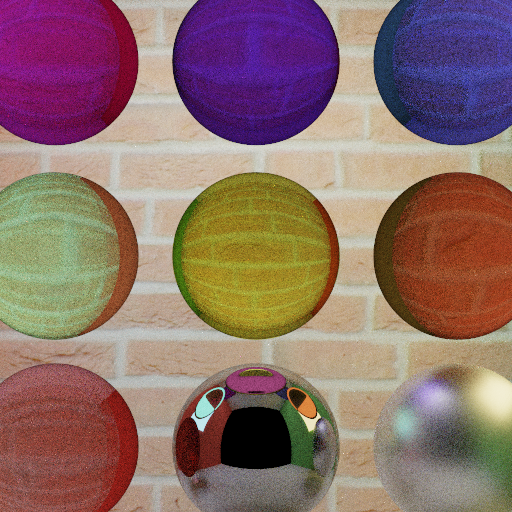
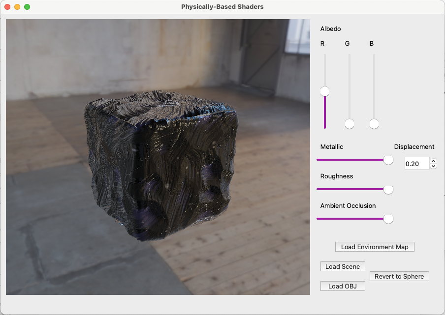

An implementation of Wave-Function Collapse on a hexagonal tile set to procedurally generate a map inspired by fantasy maps from books, movies and games. To get multiple geographical features like land, water, mountains and forests, we had to create a set of hexagonal asset tiles by hand that are then automatically rotate to generate all possible orientations for each tile. The WFC implementation includes weight selection per geographical feature, user-directed seed placement, and backtracking. The hand-drawn look is achieved using multiple post-process shaders like color pass, outline & hatching, noise pass, asset placement, edge distortion, etc.
You can try the tool here and check out the github page for more details and images.
Unity
Python
GLSL

ZenTangler
A Maya plug-in authoring tool to procedurally generate Tangle textures based on the 2016 SIGGRAPH paper "gTangle: a Grammar for the Procedural Generation of Tangle Patterns" by Christian Santoni and Fabio Pellacini. This was a group project with the goal to bring the expressive value of tangles into the Maya 3D modeling software using grammars.
Maya
Python
PyMEL
Lumos
Lumos is a 2-player cooperative game I designed and developed in a group for my game design project on Unreal Engine 5. The game is a hack & slash game in which the enemies are only visible in magic light. The idea was to encourage the 2 players to communicate and strategize to progress in the game. The goal of the game is to survive for the longest time. The game contains resources light energies, health and shields like to aid the gameplay. Features I worked on: Player & enemy animation & interactions, core light mechanics, resource spawning & management, HUD
Unreal Engine 5
C++
Blueprints
NeonDodge VR
NeonDodgeVR is a first person 2-player competitive dodge-ball inspired game in VR I worked on in a group for my game design project. This project was done in Unity using packages like OpenXR and UltimateXR.
Set in a neon thematic arena, the twist in gameplay comes from the walls of the arena that are bouncy and make evaded balls bounce around the place. The goal of the game resembles the original game of dodge ball with each player being given 5 lives and unlimited access to balls. The game featured local LAN support so that two players can play against eachother in real time using separate VR headsets.
Features worked on: Game arena creation, setting up materials & textures, player & ball interaction, main gameplay loop, resource spawning & management, HUD
Unity
C#
Monte Carlo Path Tracer
Implemented a CPU & a GPU version of the Monte Carlo Path Trace based on the Light Transport Equation using the Physically Based Rendering: From Theory To Implementation book.
Features implemented:
- Full Lighting integrator,
- Multiple Importance Sampling,
- diffused, specular, transmissive & microfacet BSDFs,
- thin lens camera,
- area, point, and spot lights.
C++
OpenGL
GLSL
Qt



Real-Time Physically Based Rendering
Implemented the Real-time Physically-Based Rendering model with Image-Based lighting based on Unreal Engine Real Shading.
Features implemented:
- Cook-Torrance microfacet models,
- variable albedo, roughness, and metal to plastic-ness,
- normal and displacement maps,
- image based lighting using diffuse and glossy convolutions.
C++
OpenGL
GLSL
Qt

A Minecraft World
3D Sandbox game group project based on Minecraft. Implemented features: camera, player physics, noise based terrain generation and asset placement, procedural sky box with day/night cycle and post-process effects like camera overlay and minimap.
C++
OpenGL
GLSL
Qt
Using signed distance field and fractional Brownian motion noise, I created an an alien canyon-like landscape with procedural coloring, animated water, and procedural sky with scattered light & some stars. More details on my Github page.
WebGL
TypeScript

Mesh Editor
A miniature version of Maya or Blender like mesh editor application that implements meshes as half edge meshes. Features implemented include interactive polar camera, visualizing and editing mesh topology, triangulating faces, splitting edges, Catmull-Clark subdivision, extruding faces, inserting edge loops, mesh skinning and deformation.
C++
OpenGL
GLSL
Qt

GLSL Shaders
Implemented various GLSL vertex and fragment shaders for different surface effects (Lambert, Blinn-Phong, Matcap, Color gradient, Toon shader, Vertex deformation) and post-processing effects (greyscale, gaussian, sobel, bloom, worley noise based animation, glitch).
C++
OpenGL
GLSL
Qt


3D Rasterizer
Implemented a 3D Rasterizer with an interactive perspective camera from scratch. Features implemented: Bounding boxes based optimization, Barycentric interpolation, Perspective-correct interpolation, Z-buffering, Texture mapping, Reflection models (Lambert, Blinn-Phong, Toon, Iridescent)
C++
OpenGL
Qt

Key Frame Animation & Motion Blending
Vicon
Motion Capture
Autodesk MotionBuilder


Walk cycle key frame animation in Autodesk MotionBuilder.
Motion Blending 3 different Motion Captures sequences captured using VICON Mocap set up.